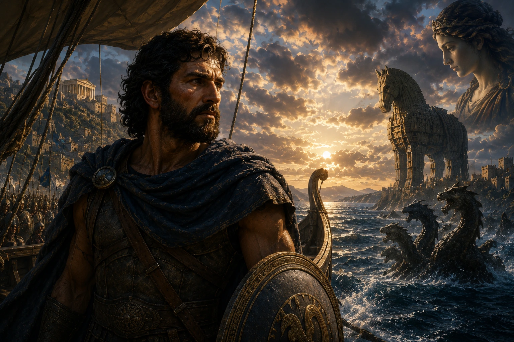

Yunan mitolojisinin en büyük kahramanları arasında adı geçen Odysseus, çoğu zaman yalnızca Truva Atı fikrini bulan kurnaz savaşçı olarak hatırlanır. Oysa bu tanım, onun mitolojik dünyadaki gerçek önemini açıklamak için oldukça yetersizdir. Akhilleus gücüyle, Herakles dayanıklılığıyla öne çıkarken Odysseus, aklı, stratejisi, ikna yeteneği ve tükenmeyen sabrıyla farklı bir kahramanlık anlayışını temsil eder. Onu diğer bütün Yunan kahramanlarından ayıran özellik de tam olarak budur. Odysseus'un en büyük silahı ne kılıcıdır ne de mızrağı; olayları herkesten farklı okuyabilen zihnidir.
Bugün Odysseus denildiğinde akla ilk olarak Truva Atı gelir. Gerçekten de mitolojik geleneğin büyük bölümünde bu zekice planın mimarı olarak kabul edilir. Ancak Odysseus'un hikâyesi Troya'nın düşmesiyle başlamaz, tam tersine asıl destanı o noktadan sonra başlar. Çünkü onun yaşamı, büyük bir savaşı kazandıktan sonra bile sona ermeyen mücadelelerin hikâyesidir. On yıl süren Truva Savaşı'nın ardından evine dönmesi de tam on yıl sürer. Böylece Odysseus'un hayatı, toplam yirmi yıl boyunca savaş, yolculuk ve özlem içinde geçer.
Bu uzun yolculuk, Antik Yunan dünyasında yalnızca fiziksel bir dönüş olarak görülmez. Odysseus'un denizlerde karşılaştığı her ada, her yaratık ve her sınav aynı zamanda insan karakterinin farklı yönlerini temsil eder. Açgözlülük, kibir, unutkanlık, baştan çıkarılma, umutsuzluk, sabır ve bilgelik gibi temalar onun yolculuğunun ayrılmaz parçalarıdır. Bu nedenle Odysseia, yalnızca macera dolu bir seyahat destanı değil, insanın eve, ailesine ve kendi kimliğine dönüşünü anlatan büyük bir edebiyat eseridir.
Odysseus'un hikâyesini güçlü yapan bir başka unsur ise kusursuz bir kahraman olmamasıdır. Zaman zaman kibirlenir, yanlış kararlar verir, öfkesine yenilir ve bu hataların bedelini ağır şekilde öder. Ancak onu farklı kılan, düştüğü her yerden yeniden ayağa kalkabilmesidir. Gücünün yetmediği yerde düşünür, savaşamayacağı yerde konuşur, konuşamayacağı yerde sabreder. Antik Yunan dünyasının gözünde gerçek bilgelik de tam olarak burada başlar.
Bu makalede Odysseus'un kim olduğunu, Troya Savaşı'ndaki rolünü, Odysseia boyunca yaşadığı olağanüstü yolculuğu, Penelope ve Telemakhos ile ilişkisini, Truva Atı planındaki yerini, Ulysses adıyla neden tanındığını ve neden dünya edebiyatının en etkileyici kahramanlarından biri kabul edildiğini ayrıntılı biçimde inceleyeceğiz. Çünkü Odysseus'un hikâyesi yalnızca eski bir mit değildir; insanın eve dönebilmek için verdiği en uzun mücadelenin anlatısıdır.
Odysseus Kimdir?
Odysseus, Yunan mitolojisinde İthaka Adası'nın kralı, Penelope'nin eşi ve Telemakhos'un babasıdır. Antik kaynaklarda yalnızca başarılı bir savaşçı olarak değil, olağanüstü zekâya sahip bir devlet adamı, usta bir hatip ve strateji uzmanı olarak tanıtılır. Homeros'un eserlerinde onun için sıkça kullanılan sıfatlardan biri polymetistir. Bu kelime, "çok yönlü düşünebilen", "sayısız çözüm üretebilen" ya da "engin zekâ sahibi" gibi anlamlar taşır. Bu ifade bile Odysseus'un karakterini anlamak için yeterlidir. O, sorunları kaba kuvvetle değil, aklıyla çözen bir kahramandır.
Odysseus'un babası Laertes, annesi ise Antikleia'dır. İthaka'nın engebeli ve kayalık coğrafyasında yetişmiş olması da onun karakteriyle ilişkilendirilir. Bereketli ovaları ya da büyük orduları olmayan küçük bir adanın hükümdarı olarak, hayatta kalabilmek için yalnızca güç değil, doğru karar verebilme yeteneği de geliştirmek zorundadır. Bazı araştırmacılar, Odysseus'un pratik zekâsının mitolojik anlatıda bu coğrafi kimlikle bilinçli biçimde ilişkilendirildiğini düşünmektedir.
Odysseus'un en dikkat çekici özelliklerinden biri, konuşma becerisidir. Antik Yunan dünyasında iyi bir hükümdarın yalnızca savaşabilmesi değil, aynı zamanda halkını ikna edebilmesi ve doğru zamanda doğru sözü söyleyebilmesi beklenirdi. Homeros'un destanlarında Odysseus sık sık diplomatik görevler üstlenir, anlaşmazlıkları yatıştırır ve savaş meydanında olduğu kadar mecliste de etkili olur. Bu yönüyle o, yalnızca bir kahraman değil, aynı zamanda ideal bir yönetici modeli olarak da karşımıza çıkar.
Mitolojide Odysseus'un adı çoğu zaman kurnazlıkla birlikte anılır. Ancak burada önemli bir ayrım yapmak gerekir. Antik Yunan dünyasında kurnazlık, bugün bazen olumsuz çağrışımlar yapan "hilecilik" anlamına gelmez. Odysseus'un sahip olduğu metis, yani pratik zekâ; beklenmedik durumlara uyum sağlayabilme, karmaşık sorunlara yaratıcı çözümler üretebilme ve rakibinden birkaç adım sonrasını görebilme yeteneğidir. Bu nedenle Odysseus'un başarısı yalnızca düşmanlarını kandırmasından değil, her koşulda hayatta kalabilecek kadar esnek düşünebilmesinden kaynaklanır.
Onu diğer Yunan kahramanlarından ayıran en önemli nokta da budur. Akhilleus'un savaş meydanındaki üstünlüğü tartışılmazdır; fakat Akhilleus'un çözmeye çalıştığı sorunları çoğu zaman mızrağı çözer. Odysseus ise aynı sorunların karşısına önce düşünerek çıkar. Bu nedenle mitolojik gelenekte biri gücün, diğeri ise zekânın zirvesi olarak görülür. Yunan dünyası her iki kahramana da ihtiyaç duyar; çünkü büyük zaferler yalnızca kuvvetle değil, doğru stratejiyle de kazanılır.
Odysseus'un Gençliği ve Penelope ile Evliliği
Odysseus'un gençlik yılları hakkında Homeros ayrıntılı bilgiler vermez; ancak sonraki antik kaynaklar onun daha çocuk yaşlardan itibaren olağanüstü bir zekâya sahip olduğunu anlatır. Soylu bir ailede yetişmesine rağmen gösterişli bir hayat sürmekten çok gözlem yapmayı, insanları anlamayı ve olayları analiz etmeyi tercih ettiği söylenir. Bu özellikler, ileride Troya Savaşı'nda üstleneceği rolün de temelini oluşturacaktır.
Odysseus'un hayatındaki en önemli dönüm noktalarından biri Penelope ile evlenmesidir. Penelope, Sparta Kralı İkarios'un kızıdır ve Yunan mitolojisinin en sadık eşlerinden biri olarak kabul edilir. Antik anlatılara göre Penelope için birçok talip bulunmasına rağmen, sonunda Odysseus ile evlenir ve İthaka'nın kraliçesi olur.
Bu evlilik yalnızca romantik bir birliktelik değildir. Homeros'un destanlarında Penelope ile Odysseus arasındaki ilişki karşılıklı güven, zekâ ve sadakat üzerine kuruludur. Penelope'nin ilerleyen yıllarda göstereceği sabır, Odysseus'un yolculuğunun en önemli parçalarından biri hâline gelecektir. Çünkü Truva Savaşı başladıktan sonra Odysseus yirmi yıl boyunca evinden uzak kalacak, Penelope ise bu uzun bekleyiş boyunca hem krallığını hem de ailesini korumaya çalışacaktır.
Evliliklerinden kısa süre sonra Telemakhos adında bir oğulları olur. Ancak Odysseus, oğlunu büyütecek zamanı bulamaz. Troya Seferi başladığında Telemakhos henüz bir bebektir. Baba ile oğlun gerçek anlamda karşılaşabilmesi için yirmi yıl geçmesi gerekecektir. Bu ayrıntı, Odysseus'un hikâyesine derin bir insani boyut kazandırır. Onun amacı yalnızca eve dönmek değildir; hiç tanıyamadığı oğlunu büyümüş hâliyle görebilmektir.
Odysseus'un aile yaşamı, Yunan mitolojisindeki diğer birçok kahramandan belirgin biçimde ayrılır. Pek çok destanda kahramanlar fetihler ve zaferlerle özdeşleştirilirken, Odysseus'un en büyük arzusu kendi evine dönebilmektir. Bu nedenle onun hikâyesinde saraylar, hazineler ya da yeni krallıklar ikinci planda kalır. Asıl hedef, İthaka'daki mütevazı yaşamına, eşine ve oğluna yeniden kavuşmaktır.
İşte bu yönüyle Odysseus, Antik Yunan edebiyatında "nostos" yani eve dönüş temasının en güçlü temsilcisi olarak kabul edilir. Onun destanı yalnızca denizlerde geçen bir macera değil; insanın ait olduğu yere ulaşabilmek için verdiği uzun ve zorlu mücadelenin simgesidir.
Odysseus Troya Savaşı'nda Nasıl Bir Rol Oynadı?
Odysseus'un adı bugün çoğunlukla Truva Atı ile birlikte anılsa da, Troya Savaşı'ndaki rolü bundan çok daha geniştir. Hatta bazı klasik filologlar, Akha ordusunun savaş boyunca en vazgeçilmez isminin Akhilleus değil, Odysseus olduğunu ileri sürer. Bunun nedeni savaş meydanında herkesten güçlü olması değildir. Tam tersine, Akha ordusunda onun kadar farklı görev üstlenebilen başka bir kahraman neredeyse yoktur. Gerektiğinde diplomat, gerektiğinde casus, gerektiğinde komutan, gerektiğinde hatip ve gerektiğinde sıradan bir asker gibi hareket edebilir. Odysseus'un asıl üstünlüğü de tam olarak bu uyum yeteneğidir.
İlginç olan ise Odysseus'un savaşa katılmayı başlangıçta istememesidir. Antik geleneğe göre Helena'nın talipleri yıllar önce önemli bir yemin etmişti. Sparta Kralı Tyndareos'un düzenlediği bu yemine göre, Helena kiminle evlenirse evlensin diğer bütün talipler onun evliliğini koruyacak ve gerekirse yardımına koşacaktı. Helena Menelaos'u seçince Odysseus da bu yeminin taraflarından biri olmuştu. Yıllar sonra Paris Helena'yı Troya'ya götürdüğünde bütün eski talipler gibi onun da sefere katılması gerekiyordu.
Fakat o sırada Odysseus'un hayatı tamamen değişmişti. Penelope ile evlenmiş, İthaka'da huzurlu bir düzen kurmuş ve henüz bebek olan Telemakhos'un babası olmuştu. Üstelik bazı kehanetler, Troya'ya giderse uzun yıllar evine dönemeyeceğini söylüyordu. Bunun üzerine Odysseus'un savaştan kaçabilmek için delirmiş gibi davrandığı anlatılır. Bir sabana öküz ile eşeği birlikte koşar, tarlayı sürmeye çalışırken toprağa tuz eker. Normal davranmadığını göstermek için bilinçli biçimde anlamsız hareketler yapmaktadır.
Ancak Akha ordusunun toplanmasıyla görevlendirilen Palamedes bu oyuna inanmaz. Odysseus'un gerçekten aklını yitirip yitirmediğini anlamak için küçük Telemakhos'u sabanın önüne bırakır. Odysseus çocuğuna zarar vermemek için son anda sabanı başka yöne çevirince delilik numarası ortaya çıkar. Böylece Troya Seferi'ne katılmak zorunda kalır.
Troya önlerine ulaşıldığında Odysseus'un üstlendiği görevler giderek artar. Agamemnon'un yanında yalnızca savaşan bir komutan değildir; aynı zamanda ordunun en önemli danışmanlarından biridir. Akha kralları arasında çıkan anlaşmazlıkların çözümünde sık sık onun görüşüne başvurulur. Homeros, Odysseus'un konuşmaya başladığında kalabalıkları etkileyebildiğini özellikle vurgular. İlk bakışta gösterişli görünmeyen bu adam, söz aldığında bütün meclisin dikkatini üzerine çeker. Antik Yunan siyaset anlayışında bu özellik, savaş meydanındaki cesaret kadar değerli kabul edilirdi.
Odysseus'un en kritik görevlerinden biri de diplomatik elçiliklerdir. Savaşın başlamasından önce Menelaos ile birlikte Troya'ya giderek Helena'nın geri verilmesini talep eden heyette yer aldığı anlatılır. Böylece savaşın önlenmesi için yapılan son resmî girişimlerden birinde bulunur. Troya yönetimi bu talebi reddedince artık çatışma kaçınılmaz hâle gelir.
Savaş sırasında ise yalnızca açık çatışmalarda değil, gece operasyonlarında da öne çıkar. Homeros'un İlyada'sında anlatılan Doloneia bölümü bunun en önemli örneğidir. Odysseus ile Diomedes, gece vakti gizlice Troya kampına sızar. Önce Troya casusu Dolon'u yakalarlar. Ondan öğrendikleri bilgiler sayesinde Trakya Kralı Rhesos'un kampına ulaşırlar. Rhesos öldürülür, ünlü beyaz atları ele geçirilir ve Akha ordusuna önemli bir askerî üstünlük sağlanır.
Bu bölüm, Odysseus'un savaş anlayışını açık biçimde ortaya koyar. Akhilleus'un kahramanlığı açık meydan savaşlarında parlar. Odysseus ise düşmanı doğrudan karşısına almadan önce bilgi toplamayı, doğru zamanı beklemeyi ve en az kayıpla en büyük sonucu elde etmeyi tercih eder. Günümüz askerî stratejisinde "özel operasyon" olarak tanımlanabilecek birçok unsurun mitolojik karşılığı bu sahnelerde görülür.
Troya Savaşı uzadıkça Odysseus'un önemi daha da artar. Çünkü savaş yalnızca güçlü savaşçılarla kazanılamayacak kadar karmaşık hâle gelmiştir. Kehanetler, diplomasi, casusluk faaliyetleri ve psikolojik üstünlük en az kılıçlar kadar belirleyici olmaya başlamıştır. Odysseus tam da bu noktada Akha ordusunun vazgeçilmez ismine dönüşür. Onun değeri, tek bir düelloyu kazanmasından değil; savaşın genel seyrini değiştirebilecek kararları alabilmesinden kaynaklanır.
Truva Atı Planı Gerçekten Odysseus'un Fikri miydi?
Bugün dünyanın herhangi bir yerinde "Truva Atı" dendiğinde akla gelen ilk isim Odysseus'tur. Bunun nedeni, antik geleneğin büyük bölümünde bu sıra dışı planın mimarı olarak onun kabul edilmesidir. Ancak bu noktada önemli bir ayrıntıyı gözden kaçırmamak gerekir. Homeros'un İlyada destanı, Truva'nın düşüşünü anlatmadığı için Truva Atı'nın ayrıntılı hikâyesi bu eserde yer almaz. Truva Atı'na ilişkin bilgilerimiz; Odysseia, Vergilius'un Aeneis destanı, Apollodoros'un derlemeleri ve daha sonraki antik yazarların aktardığı gelenekten oluşur.
Mitolojik anlatıya göre savaşın onuncu yılına gelindiğinde iki taraf da büyük kayıplar vermiştir. Akhalar, Troya surlarını aşacak güce sahip değildir; Troyalılar ise kuşatmayı tamamen sona erdirecek askerî üstünlüğü kuramaz. Yıllardır süren bu çıkmaz, savaşın artık yalnızca kuvvet kullanılarak kazanılamayacağını göstermektedir.
İşte Odysseus'un dehası tam bu noktada ortaya çıkar. O, Troya'nın en güçlü yanının surları olduğunu fark eder; fakat aynı zamanda her surun yalnızca dışarıdan saldırılara karşı inşa edildiğini de bilir. Eğer düşman şehrin içine kendi isteğiyle girerse, dünyanın en sağlam surları bile anlamını yitirir. Böylece savaşın yönünü değiştirecek fikir doğar.
Planın temelinde yalnızca büyük bir ahşap at yapmak yoktur. Asıl başarı, Troyalıların psikolojisini doğru okuyabilmesidir. Akha ordusu gemilerine binerek gerçekten çekiliyormuş görüntüsü verir. Geride yalnızca devasa tahta at bırakılır. Bu hareket, Troyalıların yıllardır beklediği zafer duygusunu tetikler. İnsan psikolojisini iyi bilen Odysseus, uzun süren kuşatmanın ardından en büyük tehlikenin rehavet olduğunu hesaplamıştır.
Planın ikinci önemli parçası ise Sinon'dur. Antik kaynaklarda Sinon, Troyalılara yakalanmayı bilerek kabul eden Akha savaşçısı olarak anlatılır. Troyalılara, atın tanrıça Athena'ya sunulmuş kutsal bir adak olduğunu söyler. Eğer at şehrin içine alınırsa Athena'nın artık Troya'yı koruyacağına dair ustaca hazırlanmış bir hikâye anlatır.
Bu sırada yalnızca birkaç kişi şüphe duyar. Rahip Laokoon'un ünlü "Yunanlar armağan getirseler bile onlardan korkarım." sözü, antik edebiyatın en çok alıntılanan ifadelerinden biri hâline gelmiştir. Ancak mitolojik anlatıya göre tam bu sırada denizden gelen iki dev yılan Laokoon'u ve oğullarını öldürür. Troyalılar bunu tanrıların bir işareti olarak yorumlar ve rahibin uyarısını dikkate almazlar. Böylece Truva Atı surların içine alınır.
Gece olduğunda Odysseus ve seçkin savaşçılar atın içinden çıkar. Şehir kapıları açılır, geri dönmek için yakınlarda bekleyen Akha filosu yeniden kıyıya ulaşır ve Troya'nın sonu gelir.
Burada dikkat çekici olan yalnızca planın başarısı değildir. Odysseus'un bütün savaş boyunca kullandığı yöntemlerin son halkası olmasıdır. O hiçbir zaman en güçlü savaşçı olmaya çalışmaz. Her zaman rakibinin beklemediği çözümü arar. Truva Atı da bu anlayışın en büyük örneğidir. Çünkü bu plan, düşmanın gücünü kırarak değil, onun düşünme biçimini kullanarak kazanılmış bir zaferdir.
Odysseia: Eve Dönüşü Yirmi Yıllık Bir Destana Dönüştüren Yolculuk
Birçok kişi Odysseus'un hikâyesinin Truva'nın düşmesiyle sona erdiğini düşünür. Oysa Homeros'un ikinci büyük destanı olan Odysseia, tam da bu noktada başlar. Aslında Odysseus'u ölümsüz yapan şey, savaşı kazanması değil; kazandıktan sonra evine dönebilmek için verdiği olağanüstü mücadeledir.
Truva'dan ayrıldığında Odysseus'un önünde yalnızca birkaç günlük deniz yolculuğu olması gerekirken, bu dönüş tam on yıl sürer. Bunun nedeni yalnızca denizlerde karşılaştığı tehlikeler değildir. Yolculuk boyunca tanrıların öfkesi, kendi yaptığı hatalar, tayfalarının yanlış kararları ve kaderin önüne çıkardığı sayısız sınav birbirine eklenir.
Odysseia'nın merkezindeki temel kavramlardan biri nostos, yani "eve dönüş"tür. Antik Yunan kültüründe nostos yalnızca fiziksel olarak memlekete ulaşmak anlamına gelmez. İnsan kimliğinin, ailesinin, geçmişinin ve ait olduğu dünyanın yeniden kazanılması demektir. Odysseus'un bütün mücadelesi de aslında bunun içindir. O yeni krallıklar fethetmek, daha büyük bir güç elde etmek ya da ölümsüz olmak istemez. Tek arzusu Penelope'ye, Telemakhos'a ve İthaka'ya yeniden kavuşmaktır.
Bu yönüyle Odysseia, diğer birçok kahramanlık destanından ayrılır. Akhilleus'un hikâyesi savaş meydanında sona yaklaşırken, Odysseus'un asıl savaşı Troya'dan ayrıldıktan sonra başlar. Karşısındaki düşmanlar artık yalnızca insanlar değildir. Devler, büyücüler, deniz canavarları, tanrılar ve insanın kendi zaaflarını temsil eden sayısız engel onu beklemektedir.
Ancak Homeros'un ustalığı burada da kendini gösterir. Odysseus'un yolculuğu yalnızca fantastik yaratıklarla dolu bir macera değildir. Her durak aynı zamanda insan karakterinin farklı bir yönünü sorgular. Bazı adalar unutmayı, bazıları açgözlülüğü, bazıları baştan çıkarılmayı, bazıları ise ölçüsüz gururun sonuçlarını temsil eder. Bu nedenle Odysseia, yüzeyde bir deniz yolculuğu gibi görünse de derin yapısında insanın kendi benliğine yaptığı uzun yolculuğu anlatır.
Kiklop Polyphemos: Odysseus'un En Büyük Hatası
Odysseia'nın en bilinen bölümlerinden biri hiç kuşkusuz Kiklop Polyphemos ile yaşanan karşılaşmadır. Günümüzde bu hikâye çoğu zaman yalnızca tek gözlü dev bir yaratığın kandırılması olarak anlatılır. Oysa Homeros'un metnine yakından bakıldığında bu bölümün çok daha derin anlamlar taşıdığı görülür. Çünkü Polyphemos sahnesi, Odysseus'un en büyük başarısını olduğu kadar en ağır hatasını da içinde barındırır.
Truva'dan ayrılan Odysseus ve adamları, yiyecek bulmak amacıyla bilinmeyen bir adaya çıkarlar. Burada büyük sürüler, bol miktarda süt ve peynir bulunan devasa bir mağara keşfederler. Tayfalarının çoğu, mağaradaki yiyecekleri alıp hemen ayrılmaları gerektiğini söyler. Odysseus ise mağaranın sahibini görmek ister. Bu karar, yolculuğunun en pahalı bedellerinden birine dönüşecektir.
Mağaranın sahibi, Poseidon'un oğlu olan Kiklop Polyphemos'tur. Homeros onu yalnızca fiziksel olarak büyük bir yaratık şeklinde anlatmaz. Polyphemos, misafirperverlik kurallarını tanımayan, yasa ve toplum düzeni dışında yaşayan ilkel bir varlıktır. Antik Yunan dünyasında xenia, yani misafire gösterilen kutsal konukseverlik, Zeus'un koruması altındaki en temel ahlaki kurallardan biriydi. Polyphemos ise bu düzenin tam karşısında durur.
Dev mağaraya döndüğünde yabancıları görünce kim olduklarını sorar. Odysseus, Zeus'un misafirlik yasalarını hatırlatarak kendilerine iyi davranmasını ister. Fakat Polyphemos tanrıları önemsemediğini söyleyerek iki Akha savaşçısını yakalar, öldürür ve yer. Ertesi gün aynı şeyi tekrar eder. Böylece Odysseus ve adamları mağarada kapana kısılmış olur.
Bu noktada Odysseus'un en belirgin özelliği yeniden ortaya çıkar. Güç kullanarak bu devi yenemeyeceğini bilir. Çünkü mağaranın girişini kapatan dev kaya ancak Polyphemos tarafından hareket ettirilebilecek kadar ağırdır. Devi öldürmek, içeride herkesin açlıktan ölmesi anlamına gelecektir. Bu nedenle önce düşünür, gözlemler ve rakibinin zayıf yönünü bulmaya çalışır.
Yanında getirdiği güçlü şarabı Polyphemos'a ikram eder. Şarabı daha önce hiç tatmamış olan dev kısa sürede sarhoş olur. Tam bu sırada Polyphemos, Odysseus'un adını sorar. Kahraman tarihin en ünlü cevaplarından birini verir:
"Benim adım Hiç Kimse."
Sarhoş olan Polyphemos uykuya daldığında Odysseus ve adamları önceden sivrilttikleri büyük zeytin kazığını ateşte kızdırarak devin tek gözüne saplar. Acıyla bağıran Polyphemos yardım ister. Diğer Kikloplar mağaranın önüne geldiğinde içeriden "Hiç Kimse bana saldırıyor!" sözünü duyarlar. Bunun üzerine gerçekten kimsenin saldırmadığını düşünerek ayrılırlar.
Odysseus'un planı kusursuz görünmektedir. Ancak mağaradan çıkabilmek için bir ayrıntıyı daha çözmesi gerekir. Polyphemos, koyunlarını dışarı çıkarırken hayvanların sırtını yoklamaya başlar. Bunun üzerine Odysseus adamlarını koyunların karınlarının altına bağlar. Dev yalnızca sırtlarını kontrol ettiği için Akhalar fark edilmeden mağaradan çıkmayı başarır.
Bu hikâye, Odysseus'un zekâsının en parlak örneklerinden biri olarak kabul edilir. Ancak aynı zamanda onun en büyük karakter kusurunu da ortaya çıkarır.
Mağaradan güvenli biçimde uzaklaştıktan sonra tayfaları sessizce yol almalarını ister. Fakat Odysseus buna razı olmaz. Kazandığı zaferin bilinmesini ister. Gemiden bağırarak Polyphemos'a gerçek adını söyler ve onu alt eden kişinin İthaka Kralı Odysseus olduğunu ilan eder.
İşte bütün felaket tam bu anda başlar. Polyphemos, Poseidon'un oğludur. Babasına dua ederek Odysseus'un asla kolayca evine dönememesini ister. Eğer dönecekse bile bütün arkadaşlarını kaybetmiş, büyük acılar yaşamış ve yıllar sonra tek başına ulaşmasını diler. Bu dua tesadüfen kabul edilmez. Poseidon gerçekten de Odysseus'un en büyük düşmanına dönüşür. Bundan sonraki yıllarda denizlerde karşılaşacağı fırtınaların, geciken yolculuğun ve bitmek bilmeyen felaketlerin önemli bölümü bu olayın sonucudur.
Bu nedenle Polyphemos bölümü yalnızca zekâ ile gücün mücadelesi değildir. Aynı zamanda kibir üzerine kurulmuş büyük bir uyarıdır. Odysseus mağaradan sessizce uzaklaşsaydı büyük olasılıkla yolculuğu çok daha kısa sürecekti. Onu felakete sürükleyen şey zaferi değil, zaferini ilan etme isteğidir.
Aiolos, Laistrygonlar ve Unutmanın Bedeli
Polyphemos'tan kurtulan Odysseus'un yolculuğu sonunda daha sakin bir döneme girmiş gibi görünür. Rüzgârların efendisi Aiolos onu dostça karşılar. Uzun süre misafir ettikten sonra eve güvenle dönebilmesi için bütün olumsuz rüzgârları büyük bir tulumun içine hapsederek Odysseus'a verir. Yalnızca İthaka'ya doğru esecek uygun rüzgârı serbest bırakır.
Gemiler günler süren yolculuğun ardından İthaka kıyılarını görmeye kadar yaklaşır. Ancak tam bu noktada trajedinin nedeni ne Poseidon'dur ne de başka bir tanrı. Sebep bu kez Odysseus'un kendi adamlarıdır. Kaptanlarının kendilerinden altın ve değerli hediyeler sakladığını düşünen tayfalar, Odysseus uyurken Aiolos'un verdiği tulumu açarlar. İçeride hapsedilmiş bütün fırtınalar aynı anda serbest kalır. Gemiler yeniden açık denizlere savrulur ve haftalar süren yolculuk birkaç dakika içinde boşa gider.
Odysseus daha sonra yeniden Aiolos'un adasına döner. Ancak bu kez Aiolos yardım etmeyi reddeder. Çünkü tanrıların bu kadar açık biçimde cezalandırdığı bir insana tekrar yardım etmenin doğru olmayacağını düşünmektedir.
Bu olay, Odysseia'nın önemli temalarından birini gösterir. Yolculuk boyunca Odysseus yalnızca kendi hatalarıyla değil, arkadaşlarının açgözlülüğü, sabırsızlığı ve güvensizliği yüzünden de defalarca başarısız olacaktır. Lider olmanın en ağır tarafı da budur. Bazen doğru karar vermek yetmez; çevrendekilerin de aynı sabrı gösterebilmesi gerekir.
Odysseus'un karşılaştığı bir sonraki büyük felaket ise Laistrygonlar ülkesidir. Bunlar Homeros tarafından dev insan yiyiciler olarak anlatılır. Limana giren Akha gemileri dar bir koyda demirlediğinde devler yüksek kayalardan büyük taşlar atmaya başlar. Ardından gemileri parçalayarak tayfaları av gibi toplamaya girişirler. Odysseus'un burada gösterdiği ihtiyat, onun karakterini yeniden ortaya koyar. Diğer komutanlardan farklı olarak gemisini limanın en dış kısmına bağlamıştır. Bu sayede saldırı başladığında kaçabilen tek gemi onunki olur. Ancak bu zafer bile ağır bir kayıpla sonuçlanır. Truva'dan ayrılırken on iki gemiye komuta eden Odysseus'un elinde artık yalnızca tek gemi kalmıştır.
Kirke Adası: Büyü, Unutma ve İnsan Kalabilme Sınavı
Laistrygonların saldırısından sonra Odysseus'un elinde artık yalnızca tek gemi kalmıştır. Hayatta kalan adamlarıyla birlikte Aiaia Adası'na ulaştığında karşısında bambaşka bir tehlike vardır. Bu kez onları bekleyen düşman açıkça saldıran bir dev ya da savaşçı değildir. Tehlike, güzel bir sarayın, sakin bir adanın ve büyüleyici bir ev sahibinin içinde saklıdır. Adanın hâkimi Kirke, antik kaynaklarda güçlü bir büyücü ve tanrısal soydan gelen olağanüstü bir kadın olarak anlatılır. Homeros onu yalnızca kötü niyetli bir cadı gibi göstermez; aksine çekici, zeki, tehlikeli ve dönüştürücü bir figür olarak kurar. Bu nedenle Kirke bölümü, Odysseus'un yolculuğunda kaba kuvvetle değil, kimlik ve irade ile ilgili en önemli sınavlardan biridir.
Kirke, gelenleri içeri davet eder, onlara yiyecek ve içecek sunar; fakat hazırladığı karışıma büyülü ilaçlar katar. Yemeği yiyen Odysseus'un adamları domuzlara dönüşür. Homeros, onların akıllarını koruduklarını ama bedenlerinin değiştiğini söyler. Bu ayrıntı çok çarpıcıdır; çünkü insan olduklarını hatırlayan ama artık insan gibi davranamayan varlıklara dönüşmüşlerdir. Kirke'nin büyüsünün asıl korkutucu yanı da budur: İnsanı öldürmez, fakat insanlığından uzaklaştırır.
Odysseus arkadaşlarını kurtarmak için tek başına saraya gitmeye karar verdiğinde tanrı Hermes ona yardım eder. Hermes, Kirke'nin büyüsüne karşı koymasını sağlayacak kutsal bitkiyi verir. Odysseus Kirke'nin büyüsüne karşı koyunca büyücü teslim olur ve adamları eski hâline döndürür. Akhalar adada uzun süre kalır. Ancak Odysseia için en büyük tehlikelerden biri tam da budur. Güzel ve rahat bir yerde kalmaya alışmak, eve dönüş hedefini unutturabilir. Sonunda Odysseus adamlarının hatırlatmasıyla yolculuğa devam etmeye karar verir.
Kirke bu noktada yalnızca büyücü değil, aynı zamanda yol gösterici bir figüre dönüşür. Ona sıradaki yolculuğunda en sarsıcı bilgiyi verir: İthaka'ya dönebilmesi için önce ölüler diyarına gitmesi, kâhin Teiresias'ın ruhuyla konuşması gerekmektedir. Böylece Odysseus'un yolculuğu denizlerde geçen bir macera olmaktan çıkar ve ölümün sınırına kadar uzanan metafizik bir arayışa dönüşür.
Odysseus Yeraltı Dünyası'na Neden İndi?
Odysseus'un ölüler diyarına inişi, Odysseia'nın en ağır ve en derin bölümlerinden biridir. Antik Yunan edebiyatında yaşayan bir insanın Hades'in sınırına yaklaşması sıradan bir olay değildir. Yeraltı Dünyası, yalnızca ölülerin bulunduğu bir yer değil, insan bilgisinin son sınırıdır. Odysseus'un buraya gitmesi, onun artık yalnızca eve dönüş yolunu aramadığını; kaderinin, geçmişinin ve geleceğinin anlamını öğrenmeye çalıştığını gösterir.
Homeros'un anlatısında Odysseus Hades'in içine tam anlamıyla inmez; daha çok ölülerin ruhlarını çağırabileceği sınır bölgesine gider. Burada kurbanlar sunar, kan akıtır ve ruhlar bu kana yaklaşarak konuşma gücü kazanır. Bu sahne, Antik Yunan'ın ölüm anlayışı açısından son derece önemlidir. Ruhlar yaşayanlar gibi güçlü, parlak ve tam değildir; gölgemsi, solgun ve eksik varlıklardır.
Odysseus'un ilk büyük karşılaşmalarından biri annesi Antikleia ile olur. Odysseus, annesinin öldüğünü bilmiyordur. Onu ölüler arasında görünce büyük bir sarsıntı yaşar. Antikleia, oğlunun yokluğuna duyduğu özlem nedeniyle öldüğünü anlatır. Bu sahne Odysseus'un yolculuğuna kişisel bir acı ekler. Artık eve dönme arzusu yalnızca Penelope ve Telemakhos'a kavuşma isteği değildir; aynı zamanda kaybedilmiş zamanın telafi edilemeyeceğini anlamaktır.
Teiresias ile karşılaşması ise yolculuğun geleceğini belirler. Kâhin ona Poseidon'un öfkesinin hâlâ sürdüğünü, eve dönüşünün kolay olmayacağını ve özellikle Helios'un kutsal sığırlarına dokunulmaması gerektiğini söyler. Eğer adamları bu uyarıyı dikkate almazsa hepsinin öleceğini, Odysseus'un ise büyük acılarla ve tek başına eve dönebileceğini bildirir.
Yeraltı Dünyası'nda Odysseus başka büyük kahramanların ruhlarıyla da karşılaşır. Agamemnon ona eve dönüşün her zaman güvenli olmadığını hatırlatır; çünkü kendisi Troya'dan döndükten sonra eşi Klytaimnestra tarafından öldürülmüştür. Akhilleus ile karşılaşması ise destanın en sarsıcı anlarından biridir. Yaşarken ölümsüz şöhreti seçen Akhilleus, ölüler arasında krallık etmektense yeryüzünde sıradan bir işçi olarak yaşamayı tercih edeceğini söyler. Bu söz, Yunan kahramanlık idealine neredeyse ters düşecek kadar güçlüdür. Odysseus bu karşılaşmayla bir kez daha anlar ki, eve dönmek yalnızca kişisel bir arzu değildir; yaşamın kendisine tutunma biçimidir.
Bu bölüm Odysseus'un hikâyesinde büyük bir dönüm noktasıdır. Kahraman, ölüler diyarında yalnızca yol tarifi almaz; insan hayatının kırılganlığını, şöhretin sınırını, yasın ağırlığını ve zamanın geri döndürülemezliğini görür. Bundan sonra yolculuğu artık eski anlamıyla macera değildir. Odysseus, ölümün sesini duymuş bir insan olarak denizlere geri döner.
Sirenler, Skylla ve Kharybdis: Zekânın Yetmediği Denizler
Yeraltı Dünyası'ndan ayrılan Odysseus yeniden Kirke'nin adasına döner. Büyücü kadın bu kez ona önünde uzanan yolculuğun en tehlikeli bölümleri hakkında ayrıntılı uyarılarda bulunur.
İlk büyük tehlike Sirenlerdir. Günümüzde Sirenler çoğu zaman güzel sesleriyle denizcileri baştan çıkaran deniz kızları olarak tasvir edilir. Oysa Homeros'un Odysseia'sında Sirenlerin asıl tehlikesi seslerindedir. Onlar insanlara yalnızca güzel şarkılar söylemez; bildiklerini, geçmişi, geleceği ve dünyanın sırlarını vaat ederler. Başka bir ifadeyle Sirenler, yalnızca kulağa değil, insanın merakına da seslenir.
Kirke, Odysseus'a bu adanın önünden geçerken bütün tayfalarının kulaklarını balmumuyla kapatmasını söyler. Kendisi ise Sirenlerin sesini duymak ister. Adamlarına kendisini geminin direğine sıkıca bağlamalarını ve ne kadar yalvarırsa yalvarsın çözmemelerini emreder. Gemi Sirenlerin yanından geçerken onların sesi Odysseus'u derinden etkiler. Kurtulmak ister, bağırır, çözülmeyi ister; fakat tayfaları verilen emri yerine getirerek onu çözmez. Böylece Odysseus, Sirenlerin şarkısını duyup hayatta kalabilen tek insan olarak anlatılır.
Sirenlerden sonra Odysseus'u çok daha zor bir seçim beklemektedir. Geminin geçeceği dar boğazın bir yanında altı başlı canavar Skylla, diğer yanında ise dev girdap Kharybdis bulunmaktadır. Kirke burada Odysseus'a acı ama gerçekçi bir tavsiye verir. Skylla'nın bulunduğu kıyıya daha yakın geçmesini söyler. Çünkü Kharybdis'e yaklaşırsa bütün gemi yok olacaktır; Skylla ise yalnızca altı adamını alacaktır.
Bu bölüm, Odysseia'nın en olgun düşüncelerinden birini yansıtır. Kahraman bazen "doğru" ile "yanlış" arasında seçim yapmaz; iki kötü seçenekten daha az yıkıcı olanı seçmek zorunda kalır. Odysseus bütün çabasına rağmen Skylla'nın saldırısını engelleyemez. Altı en iyi adamı canavar tarafından parçalanırken onların yardım çığlıklarını duyar; fakat hiçbir şey yapamaz. Çünkü burada ilk kez Odysseus'un zekâsının bile yetersiz kaldığı bir durumla karşılaşırız. Her problem çözülemez; bazen yalnızca daha büyük felaketi önlemek mümkündür.
Helios'un Kutsal Sığırları ve Bütün Yol Arkadaşlarını Kaybetmesi
Teiresias'ın Yeraltı Dünyası'nda yaptığı uyarının en önemli kısmı Helios'un kutsal sığırlarıyla ilgilidir. Güneş tanrısı Helios'un Thrinakia Adası'nda otlayan bu sürülere kesinlikle dokunulmamalıdır. Kehanet açıktır: Eğer Odysseus ve adamları bu hayvanlara zarar vermezlerse eve dönebileceklerdir. Aksi hâlde bütün tayfalar ölecek, yalnızca Odysseus uzun yıllar sürecek acıların ardından İthaka'ya ulaşacaktır.
Odysseus bu uyarıyı ciddiye alır ve adaya hiç uğramamayı ister. Ancak sert rüzgârlar gemiyi istemeden Thrinakia kıyılarına sürükler. Günlerce esen fırtına nedeniyle denize açılamazlar. Erzakları tükenmeye başlayınca Odysseus adamlarını tekrar tekrar uyarır. Fakat açlık giderek dayanılmaz hâle gelir. Bir gün Odysseus tanrılara dua etmek için gemiden uzaklaştığında derin bir uykuya dalar. Tam bu sırada tayfaların başındaki Eurylochos, adamları ikna ederek Helios'un kutsal sığırlarını kestirip yedirir.
Helios yapılanları öğrendiğinde Zeus'tan adalet ister. Zeus da gemi yeniden denize açıldıktan kısa süre sonra korkunç bir fırtına gönderir. Yıldırım gemiyi parçalar, bütün tayfalar dalgalar arasında can verir.
Böylece Teiresias'ın kehaneti eksiksiz biçimde gerçekleşir. Truva'dan on iki gemi ve yüzlerce savaşçıyla ayrılan Odysseus artık tamamen yalnızdır. Onunla birlikte savaşan, Troya surları önünde yıllar geçiren, sayısız tehlikeyi aşan bütün arkadaşları ölmüştür. Bu an, Odysseia'nın en büyük kırılma noktalarından biridir. Çünkü bundan sonra anlatılan hikâye artık bir mürettebatın değil, tek bir insanın hayatta kalma mücadelesidir.
Geminin enkazına tutunan Odysseus son bir kez daha Kharybdis'in bulunduğu ölümcül boğazdan geçmek zorunda kalır. Dev girdap neredeyse onu da içine çekecekken büyük bir incir ağacının dallarına tutunarak hayatta kalmayı başarır. Saatler sonra girdap enkaz parçalarını yeniden yüzeye çıkardığında bunlara tutunur ve açık denize sürüklenir. Odysseus artık ne kral görünümündedir ne de büyük bir ordunun komutanı. Elinde yalnızca yaşama iradesi kalmıştır.
Kalypso'nun Adası: Ölümsüzlüğü Neden Reddetti?
Odysseus'un yolculuğundaki en ilginç duraklardan biri Ogygia Adası'dır. Çünkü burada karşısına çıkan tehlike ne dev bir yaratık ne de ölümcül bir savaş olur. Bu kez onu durdurmaya çalışan şey, insanın en eski hayallerinden biridir: Sonsuz yaşam ve acısız bir hayat. Homeros'un anlatısında Ogygia, dış dünyadan tamamen kopuk, bereketli ve huzurlu bir adadır. Burada yaşayan su perisi Kalypso, Odysseus'u kurtarır ve onu yıllarca yanında tutar. Antik kaynaklarda bu sürenin yedi yıl olduğu kabul edilir.
Kalypso'nun Odysseus'a duyduğu sevgi samimidir. Onu bırakmak istemez ve birlikte sonsuza kadar yaşayabileceklerini söyler. Hatta bazı antik anlatılarda Odysseus'a ölümsüzlük vaat ettiği açıkça belirtilir.
Odysseus, Kalypso'ya Penelope'nin onun kadar güzel olmadığını bildiğini söyler. Tanrıçayla bir insanı karşılaştırmanın mümkün olmadığını da kabul eder. Buna rağmen eve dönmek istediğini açıkça dile getirir. Çünkü onun özlediği şey yalnızca eşi değildir. İthaka'nın taşlı kıyıları, sarayının sade yaşamı, oğlunun büyümüş hâli ve kendi halkı da bu özlemin parçalarıdır. Başka bir ifadeyle Odysseus, kusursuz bir cennette yaşamaktansa eksikleriyle birlikte kendi hayatını yaşamayı seçer.
Bu sahne, Odysseia'nın en güçlü felsefi bölümlerinden biri olarak değerlendirilir. Homeros burada insan olmanın anlamını sorgular. Tanrılar ölümsüz olabilir; fakat onların sahip olmadığı bir şey vardır: Geçiciliğin değerini bilmek. İnsan hayatı sınırlı olduğu için anlam kazanır. Odysseus'un İthaka'ya dönmek istemesi yalnızca ailesine duyduğu özlem değildir; ölümlü kimliğini kabul etmesidir.
Odysseus'un adadan ayrılması da kendi iradesiyle gerçekleşmez. Athena onun hâlâ dönmediğini görünce Zeus'a başvurur ve sonunda Hermes, Kalypso'ya giderek Odysseus'u serbest bırakmasını emreder. Kalypso bu karara üzülse de tanrıların buyruğuna karşı gelemez. Odysseus için sal yapılır ve yeniden denize açılır. Ancak Poseidon'un öfkesi henüz dinmemiştir. Deniz tanrısı onu fark ettiğinde korkunç bir fırtına çıkarır. Günlerce dalgalarla mücadele eden Odysseus, sonunda Phaiaklar ülkesinin kıyısına ulaşmayı başarır.
Kalypso bölümü, Odysseus'un neden diğer Yunan kahramanlarından farklı olduğunu açıkça gösterir. Akhilleus ölümsüz şöhreti seçmişti. Odysseus ise ölümsüzlüğü reddederek insan kalmayı seçmiştir. Belki de onu dünya edebiyatının en insani kahramanlarından biri yapan asıl karar budur.
İthaka'ya Dönüş ve Taliplerle Hesaplaşma
Odysseus'un yolculuğu sona ermek üzereyken Homeros, okuyucuyu beklenmedik bir gerçekle karşılaştırır. İthaka'ya ulaşmak, hikâyenin sonu değildir. Çünkü yirmi yıl boyunca kralından haber alamayan ada halkı değişmiştir. Saray, Penelope ile evlenerek krallığı ele geçirmek isteyen soylu taliplerle doludur. Bu insanlar yalnızca misafir değildir; Odysseus'un servetini tüketmekte, sarayın düzenini bozmakta ve Telemakhos'u ortadan kaldırarak iktidarı tamamen ele geçirmeyi planlamaktadır.
Athena'nın yardımıyla Odysseus yaşlı bir dilenci kılığına girer. Bu tercih onun karakterine son derece uygundur. Troya'da da, denizlerde de başarısını çoğu zaman kimliğini gizleyerek elde etmiştir. İthaka'da da önce gözlem yapmayı seçer. Kimlerin sadık kaldığını, kimlerin ihanet ettiğini anlamadan harekete geçmez. Bu süreçte onu ilk tanıyanlardan biri yaşlı köpeği Argos olur. Homeros'un yalnızca birkaç satırla anlattığı bu sahne, dünya edebiyatının en dokunaklı anlarından biri kabul edilir. Argos yirmi yıldır efendisini beklemiştir. Odysseus'u gördükten sonra sessizce ölür.
Odysseus daha sonra sadık çobanı Eumaios ve oğlu Telemakhos ile buluşur. Baba ile oğlun karşılaşması, destanın en duygusal bölümlerinden biridir. Telemakhos, babasını neredeyse hiç tanımadan büyümüştür. Athena'nın müdahalesiyle Odysseus gerçek görünümüne kavuştuğunda baba ile oğul birbirine sarılır.
Odysseus hemen saldırıya geçmez. Önce Penelope'nin düzenlediği yay yarışmasını bekler. Yarışmanın kuralı basittir: Odysseus'a ait büyük yayı gerebilen ve oku on iki baltanın sap deliğinden art arda geçirebilen kişi Penelope ile evlenecektir. Taliplerin hiçbiri yayı germeyi bile başaramaz. Sonunda yaşlı dilenci kılığındaki Odysseus yayı eline alır. Onun yıllardır dokunmadığı yayı tek hamlede germesi ve oku kusursuz biçimde hedefe göndermesi, kimliğinin ilk açık işaretidir.
Ardından destanın en sert sahnelerinden biri gelir. Odysseus, Telemakhos ve kendisine sadık kalan birkaç kişiyle birlikte sarayın kapılarını kapatır ve taliplerle hesaplaşır. Antik Yunan dünyasında misafirperverlik kurallarını çiğneyen, ev sahibinin malını yıllarca tüketen ve onun ailesini ortadan kaldırmaya çalışan insanlar en ağır suçlardan birini işlemiş sayılırdı. Bu nedenle Homeros, Odysseus'un intikamını kişisel öfke olarak değil, bozulan adalet düzeninin yeniden kurulması şeklinde sunar.
Yine de destan burada kolay bir mutlu son çizmez. Penelope bile karşısındaki kişinin gerçekten Odysseus olduğuna hemen inanmaz. Onu son kez sınamak ister. Hizmetçilere evlilik yatağını başka bir yere taşımalarını söyler. Bunun üzerine Odysseus öfkeyle yatağın taşınamayacağını anlatır; çünkü onu yaşayan bir zeytin ağacının gövdesi üzerine kendi elleriyle inşa etmiştir. Bu sırrı yalnızca ikisi bilmektedir. Penelope böylece karşısındaki kişinin gerçekten eşi olduğundan emin olur.
Bu sahne, Odysseia'nın en zarif bölümlerinden biridir. Homeros kahramanını kılıcıyla değil, ortak bir hatırayla tanıtır. Çünkü Odysseus'un gerçek zaferi saraydaki çatışma değil, yirmi yıl sonra ailesine yeniden kavuşabilmesidir.
Odysseus Gerçekten Yaşadı mı?
Odysseus'un tarihsel bir kişi olup olmadığı, tıpkı Akhilleus ve Truva Savaşı gibi klasik dünyanın en uzun süredir tartışılan sorularından biridir. Günümüze kadar ulaşan hiçbir çağdaş yazılı belge, İthaka'da gerçekten Odysseus adında bir kralın yaşadığını kesin biçimde doğrulamamaktadır. Bu nedenle modern tarihçilik açısından Odysseus'un varlığı kanıtlanmış tarihsel bir kişi olarak kabul edilmez. Ancak bu durum, onun tamamen hayal ürünü olduğu anlamına da gelmez.
Geç Tunç Çağı'nda İyon Denizi ve Ege dünyasında çok sayıda küçük krallığın bulunduğu arkeolojik olarak bilinmektedir. İthaka ve çevresindeki adalarda yapılan kazılar, MÖ ikinci binyılın sonlarında burada örgütlü yerleşimlerin varlığını göstermektedir. Birçok araştırmacı, Odysseus karakterinin Geç Tunç Çağı'nda yaşamış bir ya da birkaç yerel hükümdarın hafızasının yüzyıllar boyunca sözlü gelenekte birleşmesiyle oluşmuş olabileceğini düşünmektedir.
Bu nedenle akademik dünyadaki en dengeli yaklaşım şudur: Odysseus'un birebir tarihsel kimliği doğrulanamaz; ancak onun temsil ettiği dünya büyük ölçüde Geç Tunç Çağı Ege'sinin siyasal ve kültürel atmosferinden beslenmiştir.
Odysseus Sanat Tarihini ve Dünya Edebiyatını Nasıl Etkiledi?
Odysseus, yalnızca Yunan mitolojisinin en önemli kahramanlarından biri değildir. Aynı zamanda yaklaşık üç bin yıldır Batı edebiyatını, sanat tarihini, felsefeyi ve hatta psikolojiyi etkileyen en güçlü kültürel figürlerden biridir. Bunun temel nedeni, onun temsil ettiği kahramanlık anlayışının zamana bağlı kalmamasıdır. Akhilleus olağanüstü fiziksel gücüyle hayranlık uyandırırken, Odysseus insanın aklına, sabrına ve uyum sağlayabilme yeteneğine güvenen bir karakter olarak her dönemde yeniden yorumlanabilmiştir.
Antik Yunan sanatında Odysseus en sık betimlenen kahramanlardan biridir. Özellikle Attika üretimi siyah figürlü ve kırmızı figürlü vazolarda onun Troya Savaşı'ndaki görevleri ve Odysseia boyunca yaşadığı maceralar tekrar tekrar işlenmiştir. Kiklop Polyphemos'un gözünün kör edilmesi, Sirenlerin yanından geçişi, Skylla'nın saldırısı, Penelope ile yeniden buluşması ve taliplerle hesaplaşması, seramik sanatçılarının en sevdiği konular arasında yer alır.
Roma döneminde Odysseus'un adı Latince biçimi olan Ulysses olarak kullanılmaya başlanır. Bu isim zamanla o kadar yaygınlaşır ki günümüzde İngilizce başta olmak üzere birçok Batı dilinde Odysseus yerine Ulysses adı da aynı kahramanı ifade eder. Roma yazarları Homeros'un destanlarından büyük ölçüde etkilenmiş, ancak Odysseus'u kendi kültürel bakış açılarına göre yeniden yorumlamışlardır. Vergilius'un Aeneis destanında ise Odysseus çoğu zaman Troya'nın düşüşüne neden olan kurnaz ve tehlikeli rakip olarak tasvir edilir. Böylece aynı kahraman, farklı toplumların hafızasında tamamen farklı anlamlar kazanır.
Modern edebiyat üzerindeki etkisi ise belki daha da büyüktür. 20. yüzyılın en önemli romanlarından biri kabul edilen James Joyce'un Ulysses adlı eseri, Homeros'un destanını modern Dublin'e uyarlayan sıra dışı bir anlatıdır. Joyce burada Odysseus'un fiziksel yolculuğunu değil, sıradan bir insanın tek gün içinde yaşadığı zihinsel ve duygusal yolculuğu anlatır. Böylece yaklaşık üç bin yıllık bir mitolojik kahraman, modern roman sanatının merkezine yerleşmiş olur. Bundan sonraki yıllarda Nikos Kazancakis'ten Margaret Atwood'a kadar pek çok yazar Odysseus'u farklı açılardan yeniden ele almıştır.
Sonuç: Odysseus Neden Hâlâ Dünyanın En Büyük Kahramanlarından Biri?
Yunan mitolojisinde sayısız kahraman vardır; ancak çok azı Odysseus kadar zamana direnebilmiştir. Bunun nedeni yalnızca Truva Atı'nı planlamış olması ya da denizlerde olağanüstü maceralar yaşaması değildir. Onu ölümsüz yapan şey, insanın en temel özelliklerinden bazılarını temsil etmesidir. Güçlü olduğu için değil, düşündüğü için; yenilmez olduğu için değil, her yenilgiden sonra yeniden ayağa kalkabildiği için hatırlanır.
Odysseus'un hikâyesi dikkatle incelendiğinde aslında tek bir yolculuk anlatmadığı görülür. Birinci yolculuk Troya'ya giden savaşçının yolculuğudur. İkinci yolculuk Troya'dan İthaka'ya dönmeye çalışan denizcinin yolculuğudur. Üçüncü ve belki de en önemlisi ise bütün bu yaşananlar boyunca değişen insanın iç yolculuğudur. Truva önlerine gelen genç kral ile yirmi yıl sonra sarayına dönen Odysseus aynı kişi değildir. Araya savaşlar, kayıplar, pişmanlıklar, dostlarını yitiriş, annesinin ölümü, oğlunun büyümesi ve sayısız sınav girmiştir. Onu büyük yapan da tam olarak budur. Kahramanlığı yalnızca kazandığı zaferlerden değil, yaşadığı dönüşümden doğar.
Homeros'un eserleri bize Odysseus'un kusursuz olmadığını açıkça gösterir. Kibirlenir ve bunun bedelini öder. Bazen yanlış kararlar verir. Çevresindeki insanların hatalarını engelleyemez. Tanrılarla mücadele etmek zorunda kalır. Buna rağmen hiçbir zaman tek bir başarısızlığın bütün hayatını belirlemesine izin vermez. Her düştüğünde yeniden ayağa kalkar, her kayıptan sonra yoluna devam eder ve en sonunda ulaşmak istediği yere varır. Bu yönüyle Odysseus yalnızca Antik Yunan'ın değil, dünya edebiyatının en insani kahramanlarından biridir.
Belki de bu yüzden yaklaşık üç bin yıl sonra bile onun hikâyesi hâlâ okunuyor, araştırılıyor ve yeniden anlatılıyor. Çünkü Odysseus'un yolculuğu yalnızca Ege Denizi'nde geçen eski bir macera değildir. İnsan hayatının belirsizliklerle, seçimlerle, kayıplarla ve umutla örülü uzun yolculuğunun simgesidir. İthaka bu yüzden yalnızca bir ada değildir; insanın ait olduğu yere, sevdiklerine ve sonunda kendisine ulaşma arzusunun sembolüdür.
Sık Sorulan Sorular
Odysseus kimdir?
Odysseus, Yunan mitolojisinde İthaka Kralı, Penelope'nin eşi ve Telemakhos'un babasıdır. Homeros'un İlyada ve özellikle Odysseia destanlarının başkahramanlarından biridir. Zekâsı, stratejik düşünme becerisi ve uzun eve dönüş yolculuğuyla tanınır.
Odysseus ile Ulysses aynı kişi mi?
Evet. Odysseus, kahramanın Antik Yunanca adıdır. Ulysses ise bu ismin Latince biçimidir ve özellikle Roma edebiyatı ile Batı Avrupa geleneğinde yaygın olarak kullanılmıştır.
Odysseus gerçekten Truva Atı'nın mucidi miydi?
Mitolojik geleneğin büyük bölümünde Truva Atı planının mimarı olarak Odysseus kabul edilir. Ancak Truva'nın düşüşünü ayrıntılı biçimde anlatan tek bir antik kaynak bulunmadığı için bu hikâye farklı eserlerin ortak anlatısından oluşmuştur.
Odysseus'un eve dönüşü neden on yıl sürdü?
Poseidon'un öfkesi, kendi yaptığı bazı hatalar, tayfalarının yanlış kararları ve yolculuk boyunca karşılaştığı olağanüstü engeller nedeniyle İthaka'ya dönüşü tam on yıl sürmüştür. Böylece Truva Savaşı'nın on yılıyla birlikte evinden toplam yirmi yıl uzak kalmıştır.
Penelope neden bu kadar önemlidir?
Penelope, Odysseus'un yirmi yıl boyunca geri döneceğine inanan ve sarayını koruyan eşi olarak sadakatin en güçlü sembollerinden biri hâline gelmiştir. Antik Yunan edebiyatında ideal eş figürlerinden biri kabul edilir.
Odysseus gerçekten yaşamış mıydı?
Odysseus'un tarihsel olarak yaşadığını kanıtlayan kesin bir belge bulunmamaktadır. Ancak birçok araştırmacı, karakterin Geç Tunç Çağı Ege dünyasındaki gerçek hükümdarlar ve tarihsel olaylardan esinlenerek oluşmuş olabileceğini düşünmektedir.
Kaynakça
Homer. The Iliad. Loeb Classical Library; Penguin Classics; Oxford World's Classics.
Homer. The Odyssey. Çeşitli akademik edisyonlar (Loeb Classical Library, Penguin Classics, Oxford World's Classics).
Apollodorus. The Library. Harvard University Press.
Hyginus. Fabulae. University of Kansas Publications.
Virgil. Aeneid. Oxford World's Classics.
Timothy Gantz. Early Greek Myth. Johns Hopkins University Press.
Karl Kerényi. The Heroes of the Greeks. Thames & Hudson.
Robin Lane Fox. The Classical World. Penguin Books.
Jenny Strauss Clay. The Wrath of Athena: Gods and Men in the Odyssey. Princeton University Press.
The British Museum – Collection Online.
The Metropolitan Museum of Art – Heilbrunn Timeline of Art History.
Encyclopaedia Britannica – "Odysseus", "Odyssey", "Ulysses".